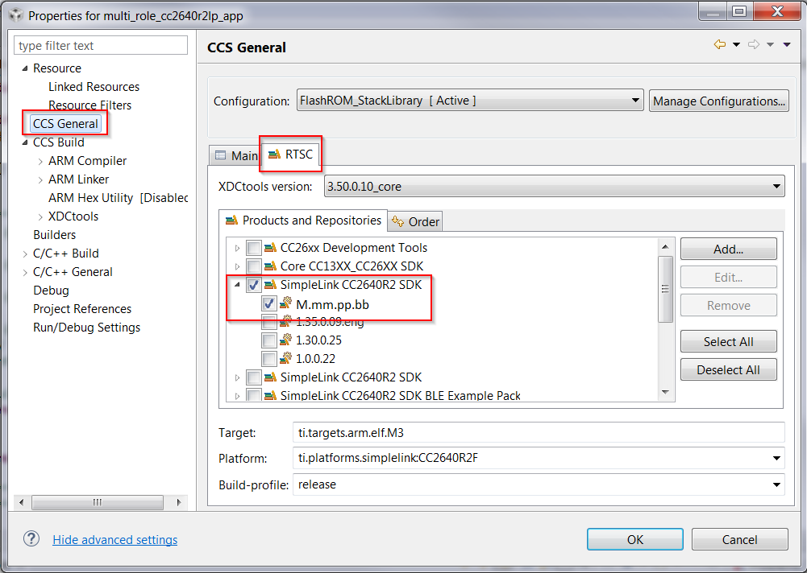
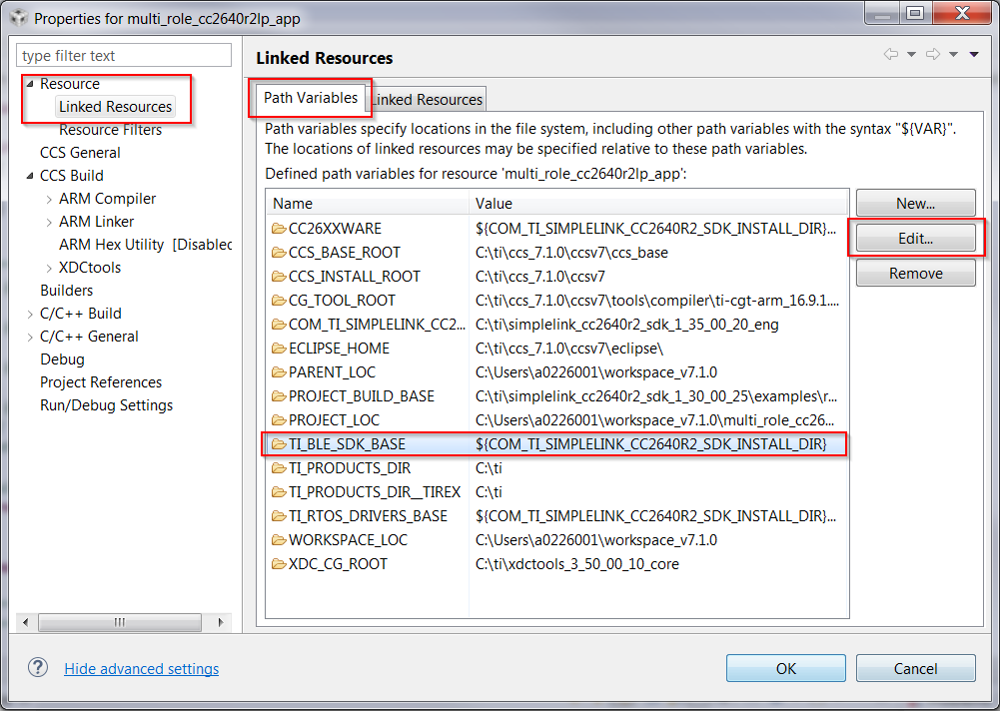
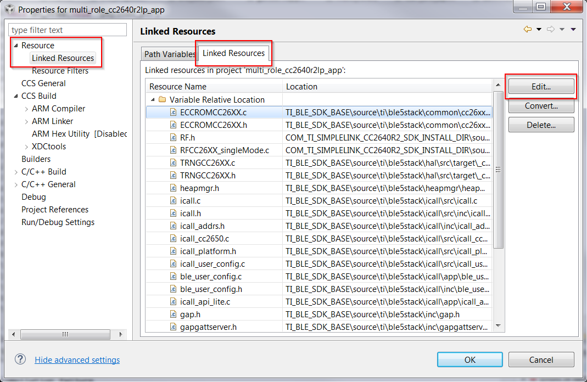
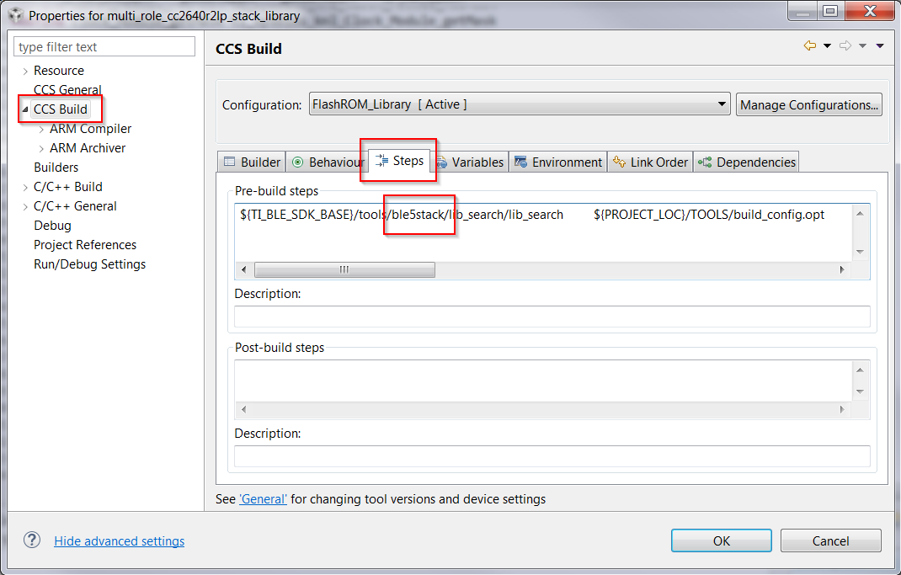
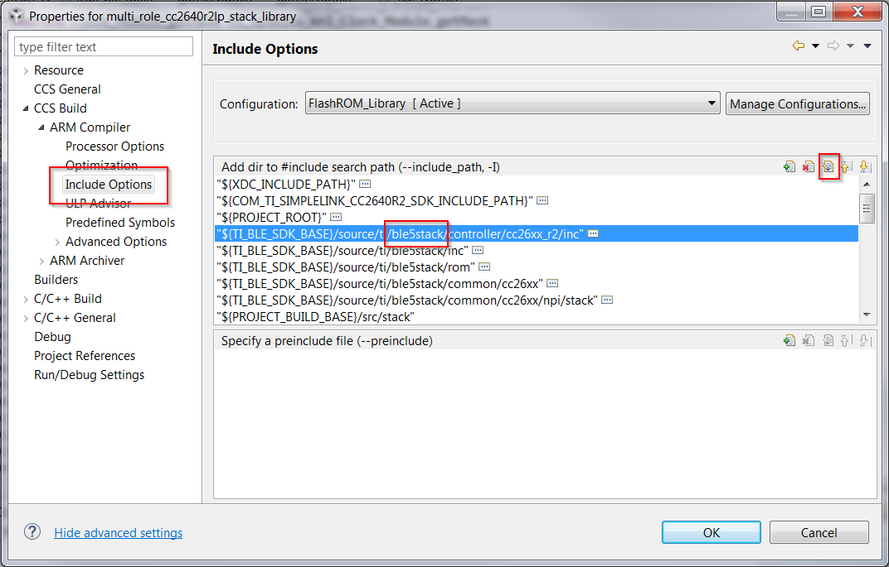
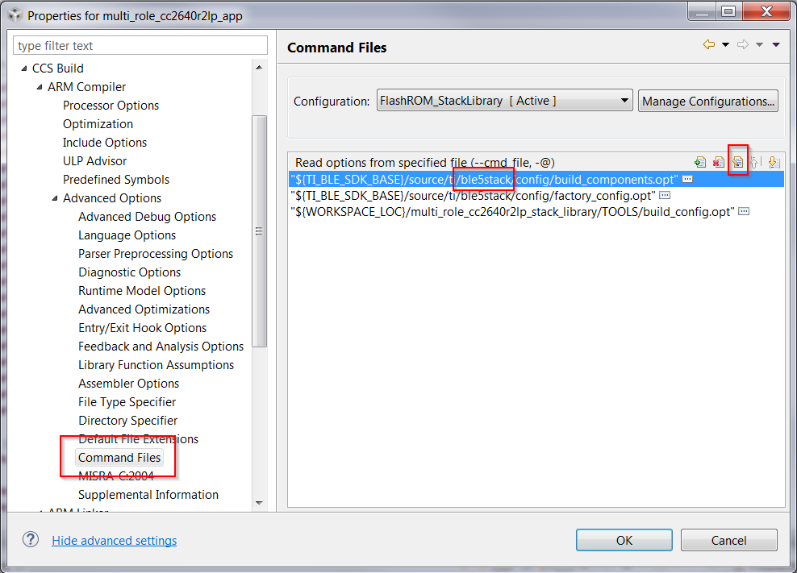
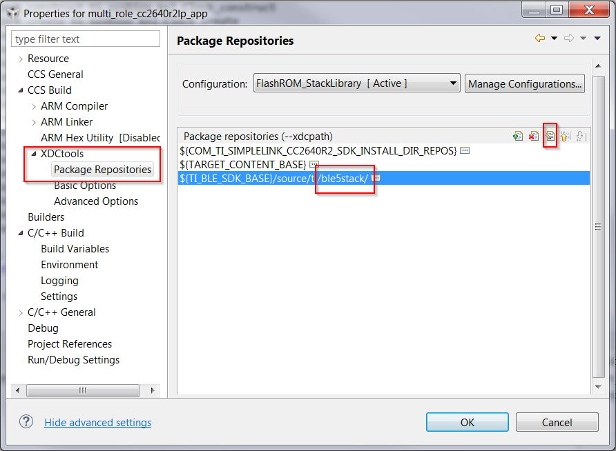

BLE-Stack 3.00.01 to BLE5-Stack 1.00.00¶
This section will describe a way to migrate a BLE-Stack 3.00.01 project to BLE5-Stack 1.00.00. This will allow use of BLE5 features that are contained in the BLE5-Stack 1.00.00.
The easiest way of migrating to BLE5 is by starting with a project in BLE5-Stack 1.00.00. For example, if your base project is simple_peripheral in BLE-Stack 3.00.01, use simple_peripheral in BLE5-Stack 1.00.00 and do application-level modifications If you follow this way, jump directly to Application Modifications, no project configuration changes are required.
If you want to start from a BLE-Stack 3.00.01 project, the migration has two steps:
The majority of the effort is in the configuration modifications. The application-level changes are minor.
If an in-place migration is required, both steps must be done. This is the case if your project contains files that can not be moved into BLE5-Stack 1.00.00.
In this section, the multi_role project will be used as an example. The BLE-Stack 3.00.01 multi_role project will be converted to use BLE5-Stack 1.00.00.
It is assumed that the default installation directory was used for both installations of the SimpleLink CC2640R2 SDK (both the SDK containing the BLE-Stack 3.00.01 project and the BLE5-Stack).
Project Configuration Changes¶
The project configuration structures are different in BLE5-Stack 1.00.00 than in BLE-Stack 3.00.01. Depending on the IDE being utilized, the steps for changing them are different. The steps for CCS users follow after the steps for IAR users.
IAR¶
For IAR, two files types are important to understand. *.ewp files
and *.custom_argvars. In the *.custom_argvars-file, file location
paths are defined. These defines are used by the *.ewp files.
Attention
After you have changed the *.custom_argvars and *.ewp files, you
must close and re-open the workspace. You can do this from the File menu.
In the project being ported, the *.custom_argvars file needs to be modified
to use the updated path names. In other words, the *.custom_argvars needs to
be replaced with the template shown in Listing 101..
Emphasized lines in Listing 101. must be changed to paths of the BLE5-Stack 1.00.00. An overview of the paths that must be changed is given in Table 20. See Listing 102. to see the new values.
<?xml version="1.0" encoding="iso-8859-1"?>
<iarUserArgVars>
<group active="true" name="SIMPLELINK_CC2640R2_SDK">
<variable>
<name>SIMPLELINK_CORE_SDK_INSTALL_DIR</name>
<value></value>
</variable>
<variable>
<name>XDCROOT</name>
<value></value>
</variable>
<variable>
<name>EXAMPLE_ROOT</name>
<value></value>
</variable>
<variable>
<name>XDCPATH</name>
<value>$SIMPLELINK_CORE_SDK_INSTALL_DIR$/kernel/tirtos/packages;$SIMPLELINK_CORE_SDK_INSTALL_DIR$/source;$SRC_BLE_DIR$</value>
</variable>
<variable>
<name>SRC_BLE_DIR</name>
<value></value>
</variable>
<variable>
<name>SRC_COMMON_DIR</name>
<value></value>
</variable>
<variable>
<name>TOOLS_BLE_DIR</name>
<value></value>
</variable>
<variable>
<name>ROM_DIR</name>
<value></value>
</variable>
</group>
</iarUserArgVars>
| Variable Name | Description |
|---|---|
| SIMPLELINK_CORE_SDK_INSTALL_DIR | Directory of SDK containing the ble-stack being used. |
| XDCROOT | Installation of XDCTools to be used with the stack. |
| EXAMPLE_ROOT | Directory of the project being ported. |
| XDCPATH | Refers to paths used by XDCTools during prebuild steps. |
| SRC_BLE_DIR | Directory of the stack being used. |
| SRC_COMMON_DIR | Directory of the stack being used. |
| TOOLS_BLE_DIR | Tools directory of the stack being used. |
| ROM_DIR | ROM directory of the stack being used. |
In this example, open multi_role.custom_argvars with a text editor.
multi_role.custom_argvars is located in
<SDK_INSTALL_DIR>\examples\rtos\CC2640R2_LAUNCHXL\blestack\multi_role\tirtos\iar.
Change the contents of multi_role.custom_argvars to be:
<?xml version="1.0" encoding="iso-8859-1"?>
<iarUserArgVars>
<group active="true" name="SIMPLELINK_CC2640R2_SDK">
<variable>
<name>SIMPLELINK_CORE_SDK_INSTALL_DIR</name>
<value>C:/ti/simplelink_cc2640r2_sdk_M_mm_pp_bb</value>
</variable>
<variable>
<name>XDCROOT</name>
<value>c:/ti/xdctools_M_mm_pp_bb_core</value>
</variable>
<variable>
<name>EXAMPLE_ROOT</name>
<value>C:/ti/simplelink_cc2640r2_sdk_M_mm_pp_bb/examples/rtos/CC2640R2_LAUNCHXL/blestack/multi_role</value>
</variable>
<variable>
<name>XDCPATH</name>
<value>$SIMPLELINK_CORE_SDK_INSTALL_DIR$/kernel/tirtos/packages;$SIMPLELINK_CORE_SDK_INSTALL_DIR$/source;$SRC_BLE_DIR$</value>
</variable>
<variable>
<name>SRC_BLE_DIR</name>
<value>C:/ti/simplelink_cc2640r2_sdk_M_mm_pp_bb/source/ti/ble5stack</value>
</variable>
<variable>
<name>SRC_COMMON_DIR</name>
<value>C:/ti/simplelink_cc2640r2_sdk_M_mm_pp_bb/source/ti/ble5stack</value>
</variable>
<variable>
<name>TOOLS_BLE_DIR</name>
<value>C:/ti/simplelink_cc2640r2_sdk_M_mm_pp_bb/tools/ble5stack</value>
</variable>
<variable>
<name>ROM_DIR</name>
<value>C:/ti/simplelink_cc2640r2_sdk_M_mm_pp_bb/source/ti/ble5stack/rom</value>
</variable>
</group>
</iarUserArgVars>
Now these variables need to be used in the projects. This is done by modifying
the *.ewp files associated with both the application and stack projects.
In this example, the *.ewp files by default are located at
C:\ti\simplelink_cc2640r2_sdk_M_mm_pp_bb\examples\rtos\CC2640R2_LAUNCHXL\blestack\multi_role\tirtos\iar\app
and C:\ti\simplelink_cc2640r2_sdk_M_mm_pp_bb\examples\rtos\CC2640R2_LAUNCHXL\blestack\multi_role\tirtos\iar\stack
for the application and stack respectively.
A substitution table can be made to replace the references in cc2640r2lp_app.ewp
and cc2640r2lp_stack.ewp:
| Original Reference | Updated Reference |
|---|---|
| $SRC_BLE$ | $SRC_BLE_DIR$ |
| $SRC_COMMON$ | $SRC_COMMON_DIR$ |
| $CC26XXWARE$ | $SIMPLELINK_CORE_SDK_INSTALL_DIR$/source/ti/devices/cc26x0r2 |
| $TI_RTOS_DRIVERS_BASE$ | $SIMPLELINK_CORE_SDK_INSTALL_DIR$/source |
| $TI_RTOS_KERNEL$ | $SIMPLELINK_CORE_SDK_INSTALL_DIR$/kernel/tirtos |
| $TOOLS_BLE$ | $TOOLS_BLE_DIR$ |
This result in the following files if the substitutions are made:
Partial diff of modified
resources/cc2640r2lp_app.ewpand originalresources/cc2640r2lp_app.orig.ewp<name>$PROJ_DIR$\..\config\iar_boundary.bdef</name> --- resources/cc2640r2lp_app.orig.ewp +++ resources/cc2640r2lp_app.ewp @@ -285,9 +285,9 @@ </option> <option> <name>IExtraOptions</name> - <state>-f $SRC_BLE$/config/build_components.opt</state> + <state>-f $SRC_BLE_DIR$/config/build_components.opt</state> <state>-f $PROJ_DIR$\..\stack\build_config.opt</state> - <state>-f $SRC_BLE$/config/factory_config.opt</state> + <state>-f $SRC_BLE_DIR$/config/factory_config.opt</state> <state>-f $PROJ_DIR$\..\config\configPkg\compiler.opt.defs</state> </option> <option> @@ -336,30 +336,30 @@ </option> <option> <name>CCIncludePath2</name> - <state>$SRC_BLE$/controller/cc26xx_r2/inc</state> - <state>$SRC_BLE$/inc</state> - <state>$SRC_BLE$/common/cc26xx</state> - <state>$SRC_BLE$/common/cc26xx/menu</state> + <state>$SRC_BLE_DIR$/controller/cc26xx_r2/inc</state> + <state>$SRC_BLE_DIR$/inc</state> + <state>$SRC_BLE_DIR$/common/cc26xx</state> + <state>$SRC_BLE_DIR$/common/cc26xx/menu</state> <state>$PROJ_DIR$\..\..\..\src/app</state> - <state>$SRC_BLE$/icall/inc</state> - <state>$SRC_BLE$/inc</state> - <state>$SRC_BLE$/profiles/dev_info</state>Partial diff of modified
resources/cc2640r2lp_stack.ewpand originalresources/cc2640r2lp_stack.orig.ewp</project> --- resources/cc2640r2lp_stack.orig.ewp +++ resources/cc2640r2lp_stack.ewp @@ -277,8 +277,8 @@ <option> <name>IExtraOptions</name> <state>--aeabi</state> - <state>-f $SRC_BLE$/config/build_components.opt</state> - <state>-f $SRC_BLE$/config/factory_config.opt</state> + <state>-f $SRC_BLE_DIR$/config/build_components.opt</state> + <state>-f $SRC_BLE_DIR$/config/factory_config.opt</state> <state>-f $PROJ_DIR$/build_config.opt</state> <state>--diag_suppress=Pa050</state> <state>-Dxdc_target_types__=iar/targets/arm/std.h</state> @@ -330,31 +330,31 @@ </option> <option> <name>CCIncludePath2</name> - <state>$SRC_BLE$/controller/cc26xx_r2/inc</state> - <state>$SRC_BLE$/inc</state> - <state>$SRC_BLE$/rom</state> - <state>$SRC_BLE$/common/cc26xx</state> - <state>$SRC_BLE$/common/cc26xx/npi/stack</state> - <state>$SRC_COMMON$/hal/src/target/_common</state> + <state>$SRC_BLE_DIR$/controller/cc26xx_r2/inc</state> + <state>$SRC_BLE_DIR$/inc</state> + <state>$SRC_BLE_DIR$/rom</state> + <state>$SRC_BLE_DIR$/common/cc26xx</state> + <state>$SRC_BLE_DIR$/common/cc26xx/npi/stack</state> + <state>$SRC_COMMON_DIR$/hal/src/target/_common</state> <state>$PROJ_DIR$\..\..\..\src/stack</state>
After you have changed the *.custom_argvars and *.ewp files, close the
workspace. Select File and Close Workspace. Then re-open your workspace.
At this point Application Modifications are required to
finish porting.
CCS¶
- There are two main ways to convert a CCS project:
- Adjustment of project settings, paths, etc through CCS’s GUI or
- Modification of the project files directly.
Warning
Modify files directly at your own risk. Have a back up ready. If a wrong modification is made your project will not function.
First, modify the project configuration to support BLE5-Stack 1.00.00 paths. This operation can be done while the application and stack projects are opened/imported into the current CCS workspace.
For both the application project and the stack project:
- In Project Explorer, right click on the application/stack project
- Select the Properties Item
- Select General in the navigation pane
- Select RTSC tab in the window
- Select 1.35.00.26 under SimpleLink CC2640R2 SDK in the Products and Repositories
Figure 122. Selecting SDK in CCS
{kind=link}
This will change a number of build paths to use the selected SDK.
Change the TI_BLE_SDK_BASE path variable to point to the
BLE5-Stack 1.00.00 as well for both application and stack projects.
For both the application project and the stack project:
- In Project Explorer, right click on the application/stack project
- Select the Properties item
- Expand Resource in the navigation pane, and select Linked Resources
- Select
TI_BLE_SDK_BASEin the Path Variables listing- Click Edit, and change the location to
${COM_TI_SIMPLELINK_CC2640R2_SDK_INSTALL_DIR}Figure 123. Changing Path Variable in CCS
{kind=link}
All linked resources need to be coming from BLE5-Stack 1.00.00. These are
all the files that are referenced in the project, but are located within the SDK. All the files
contained in a project is located in the .project file associated with the project.
The .project file can be modified from within CCS with the following instructions:
For both the application project and the stack project:
- In Project Explorer, right click on the application/stack project
- Select the Properties item
- Expand Resource in the navigation pane, and select Linked Resources
- Select the Linked Resources tab in the window
- Edit every entry to use
ble5stackinstead ofblestack- In the spp project, remove the
icall_apimsg.hentry. (It is not needed in BLE5-Stack.)Figure 124. Changing Linked Resources in CCS
{kind=link}
Note
See Application Modifications for how to deal
with the #include changes regarding icall_apimsg.h in the application code.
The .project files for the application and stack projects can be modified
directly to produce the same effect. Change all <locationURI> tags to use
ble5stack instead of blestack, and remove the icall_apimsg.h entry.
In this example, applying the changes to the multi_role project results in the following:
- Partial diff of modified
resources/app.projectand original
resources/app.orig.project<name>TI_RTOS_DRIVERS_BASE</name> --- resources/app.orig.project +++ resources/app.project @@ -59,112 +59,107 @@ <link> <name>ICall/heapmgr.h</name> <type>1</type> - <locationURI>TI_BLE_SDK_BASE/source/ti/blestack/heapmgr/heapmgr.h</locationURI> + <locationURI>TI_BLE_SDK_BASE/source/ti/ble5stack/heapmgr/heapmgr.h</locationURI> </link> <link> <name>ICall/icall.c</name> <type>1</type> - <locationURI>TI_BLE_SDK_BASE/source/ti/blestack/icall/src/icall.c</locationURI> + <locationURI>TI_BLE_SDK_BASE/source/ti/ble5stack/icall/src/icall.c</locationURI> </link> <link> <name>ICall/icall.h</name> <type>1</type> - <locationURI>TI_BLE_SDK_BASE/source/ti/blestack/icall/src/inc/icall.h</locationURI> + <locationURI>TI_BLE_SDK_BASE/source/ti/ble5stack/icall/src/inc/icall.h</locationURI> </link> <link> <name>ICall/icall_addrs.h</name> <type>1</type> - <locationURI>TI_BLE_SDK_BASE/source/ti/blestack/icall/inc/icall_addrs.h</locationURI> + <locationURI>TI_BLE_SDK_BASE/source/ti/ble5stack/icall/inc/icall_addrs.h</locationURI> </link> <link> <name>ICall/icall_cc2650.c</name> <type>1</type>
- Partial diff of modified
resources/stack.projectand original
resources/stack.orig.project<name>TI_RTOS_DRIVERS_BASE</name> --- resources/stack.orig.project +++ resources/stack.project @@ -88,302 +88,282 @@ <link> <name>Host/gatt_uuid.c</name> <type>1</type> - <locationURI>TI_BLE_SDK_BASE/source/ti/blestack/host/gatt_uuid.c</locationURI> + <locationURI>TI_BLE_SDK_BASE/source/ti/ble5stack/host/gatt_uuid.c</locationURI> </link> <link> <name>Host/gatt_uuid.h</name> <type>1</type> - <locationURI>TI_BLE_SDK_BASE/source/ti/blestack/inc/gatt_uuid.h</locationURI> + <locationURI>TI_BLE_SDK_BASE/source/ti/ble5stack/inc/gatt_uuid.h</locationURI> </link> <link> <name>ICallBLE/ble_dispatch.h</name> <type>1</type> - <locationURI>TI_BLE_SDK_BASE/source/ti/blestack/icall/inc/ble_dispatch.h</locationURI> + <locationURI>TI_BLE_SDK_BASE/source/ti/ble5stack/icall/inc/ble_dispatch.h</locationURI> </link> <link> <name>ICallBLE/ble_dispatch_JT.c</name> <type>1</type> - <locationURI>TI_BLE_SDK_BASE/source/ti/blestack/icall/stack/ble_dispatch_JT.c</locationURI> + <locationURI>TI_BLE_SDK_BASE/source/ti/ble5stack/icall/stack/ble_dispatch_JT.c</locationURI> </link> <link> <name>ICallBLE/ble_dispatch_lite.c</name> <type>1</type>
The next step is to modify the tools used for pre-build and post-build steps, to be the tools from BLE5-Stack 1.00.00.
For both the application project and the stack project:
- In Project Explorer, right click on the application/stack project
- Select the Properties item
- Select CCS Build in the navigation pane
- Select the Steps tab in the window
- Edit Pre-Build and Post-build steps to use
ble5stackinstead ofblestack.Figure 125. Changing Build Steps in CCS.
{kind=link}
Modify of the include paths to utilize BLE5-Stack 1.00.00 headers. The correct header files allow use of the correct stack API.
For both the application project and the stack project:
- In Project Explorer, right click on the application/stack project
- Select the Properties item
- Select CCS Build in the navigation pane, and expand ARM Compiler
- Select Include Options
- Edit items to use
ble5stackinstead ofblestack.Figure 126. Changing Include Paths in CCS.
{kind=link}
Modification of the included linker command files is required is to
pull in default configurations and correct libraries for BLE5-Stack 1.00.00.
This is done by correctly selecting the build_components.opt and
factory_config.opt files for the stack being used. Both these files feed
into the linker, and enable linking of BLE5-Stack 1.00.00 features.
For only the application project:
- In Project Explorer, right click on the application project
- Select the Properties item
- Expand CCS Build in the navigation pane, then expand ARM Compiler
- Expand Advanced Options and select Command Files
- Edit items to use
ble5stackinstead ofblestack.Figure 127. Changing Linker Command Files Passed to Linker in CCS.
{kind=link}
Lastly, modification to the XDC Tools packet repositories is needed to make them point to BLE5-Stack 1.00.00.
For the application project:
- In Project Explorer, right click on the application project
- Select the Properties item
- Expand CCS Build in the navigation pane, then expand XDCtools
- Select Package Repositories
- Edit items to use
ble5stackinstead ofblestack.Figure 128. Changing XDC Tools repositories in CCS.
{kind=link}
The .cproject for the application and stack project can be modified directly
to produce the same effect as modifications via CCS GUI. This must be done on
pre-build and post-build steps, include paths, linker, and XDC tools. In this
example, applying the above changes to the .cproject file for multi_role
results in the following:
- Partial diff of modified
resources/app.cprojectand original
resources/app.orig.cproject<project-mappings> --- resources/app.orig.cproject +++ resources/app.cproject @@ -1,8 +1,8 @@ <?xml version="1.0" encoding="UTF-8" standalone="no"?> <?fileVersion 4.0.0?><cproject storage_type_id="org.eclipse.cdt.core.XmlProjectDescriptionStorage"> <storageModule configRelations="2" moduleId="org.eclipse.cdt.core.settings"> - <cconfiguration id="com.ti.ccstudio.buildDefinitions.TMS470.Default.109243204"> - <storageModule buildSystemId="org.eclipse.cdt.managedbuilder.core.configurationDataProvider" id="com.ti.ccstudio.buildDefinitions.TMS470.Default.109243204" moduleId="org.eclipse.cdt.core.settings" name="FlashROM_StackLibrary"> + <cconfiguration id="com.ti.ccstudio.buildDefinitions.TMS470.Default.1936106048"> + <storageModule buildSystemId="org.eclipse.cdt.managedbuilder.core.configurationDataProvider" id="com.ti.ccstudio.buildDefinitions.TMS470.Default.1936106048" moduleId="org.eclipse.cdt.core.settings" name="FlashROM_StackLibrary"> <externalSettings/> <extensions> <extension id="com.ti.ccstudio.binaryparser.CoffParser" point="org.eclipse.cdt.core.BinaryParser"/> @@ -14,10 +14,10 @@ </extensions> </storageModule> <storageModule moduleId="cdtBuildSystem" version="4.0.0"> - <configuration artifactExtension="out" artifactName="${ProjName}" buildProperties="" cleanCommand="${CG_CLEAN_CMD}" description="" errorParsers="org.eclipse.rtsc.xdctools.parsers.ErrorParser;org.eclipse.cdt.core.GmakeErrorParser;com.ti.ccstudio.errorparser.CoffErrorParser;com.ti.ccstudio.errorparser.AsmErrorParser;com.ti.ccstudio.errorparser.LinkErrorParser" id="com.ti.ccstudio.buildDefinitions.TMS470.Default.109243204" name="FlashROM_StackLibrary" parent="com.ti.ccstudio.buildDefinitions.TMS470.Default" postbuildStep="${CG_TOOL_HEX} -order MS --memwidth=8 --romwidth=8 --intel -o ${ProjName}.hex ${ProjName}.out" prebuildStep=""> - <folderInfo id="com.ti.ccstudio.buildDefinitions.TMS470.Default.109243204." name="/" resourcePath=""> - <toolChain id="com.ti.ccstudio.buildDefinitions.TMS470_16.9.exe.DebugToolchain.896519329" name="TI Build Tools" superClass="com.ti.ccstudio.buildDefinitions.TMS470_16.9.exe.DebugToolchain" targetTool="com.ti.ccstudio.buildDefinitions.TMS470_16.9.exe.linkerDebug.733143634"> - <option id="com.ti.ccstudio.buildDefinitions.core.OPT_TAGS.500455323" superClass="com.ti.ccstudio.buildDefinitions.core.OPT_TAGS" valueType="stringList"> + <configuration artifactExtension="out" artifactName="${ProjName}" buildProperties="" cleanCommand="${CG_CLEAN_CMD}" description="" errorParsers="org.eclipse.rtsc.xdctools.parsers.ErrorParser;org.eclipse.cdt.core.GmakeErrorParser;com.ti.ccstudio.errorparser.CoffErrorParser;com.ti.ccstudio.errorparser.AsmErrorParser;com.ti.ccstudio.errorparser.LinkErrorParser" id="com.ti.ccstudio.buildDefinitions.TMS470.Default.1936106048" name="FlashROM_StackLibrary" parent="com.ti.ccstudio.buildDefinitions.TMS470.Default" postbuildStep="${CG_TOOL_HEX} -order MS --memwidth=8 --romwidth=8 --intel -o ${ProjName}.hex ${ProjName}.out" prebuildStep=""> + <folderInfo id="com.ti.ccstudio.buildDefinitions.TMS470.Default.1936106048." name="/" resourcePath=""> + <toolChain id="com.ti.ccstudio.buildDefinitions.TMS470_16.9.exe.DebugToolchain.331723491" name="TI Build Tools" superClass="com.ti.ccstudio.buildDefinitions.TMS470_16.9.exe.DebugToolchain" targetTool="com.ti.ccstudio.buildDefinitions.TMS470_16.9.exe.linkerDebug.970699676"> + <option id="com.ti.ccstudio.buildDefinitions.core.OPT_TAGS.141539949" superClass="com.ti.ccstudio.buildDefinitions.core.OPT_TAGS" valueType="stringList"> <listOptionValue builtIn="false" value="DEVICE_CONFIGURATION_ID=Cortex M.CC2640R2F"/> <listOptionValue builtIn="false" value="DEVICE_ENDIANNESS=little"/> <listOptionValue builtIn="false" value="OUTPUT_FORMAT=ELF"/> @@ -26,48 +26,48 @@ <listOptionValue builtIn="false" value="RTSC_MBS_VERSION=7.0.0"/>
- Partial diff of modified
resources/stack.cprojectand original
resources/stack.orig.cproject<project-mappings> --- resources/stack.orig.cproject +++ resources/stack.cproject @@ -1,8 +1,8 @@ <?xml version="1.0" encoding="UTF-8" standalone="no"?> <?fileVersion 4.0.0?><cproject storage_type_id="org.eclipse.cdt.core.XmlProjectDescriptionStorage"> <storageModule configRelations="2" moduleId="org.eclipse.cdt.core.settings"> - <cconfiguration id="com.ti.ccstudio.buildDefinitions.TMS470.Default.471795021"> - <storageModule buildSystemId="org.eclipse.cdt.managedbuilder.core.configurationDataProvider" id="com.ti.ccstudio.buildDefinitions.TMS470.Default.471795021" moduleId="org.eclipse.cdt.core.settings" name="FlashROM_Library"> + <cconfiguration id="com.ti.ccstudio.buildDefinitions.TMS470.Default.858636628"> + <storageModule buildSystemId="org.eclipse.cdt.managedbuilder.core.configurationDataProvider" id="com.ti.ccstudio.buildDefinitions.TMS470.Default.858636628" moduleId="org.eclipse.cdt.core.settings" name="FlashROM_Library"> <externalSettings/> <extensions> <extension id="com.ti.ccstudio.binaryparser.CoffParser" point="org.eclipse.cdt.core.BinaryParser"/> @@ -13,53 +13,53 @@ </extensions> </storageModule> <storageModule moduleId="cdtBuildSystem" version="4.0.0"> - <configuration artifactExtension="lib" artifactName="${ProjName}" buildProperties="" cleanCommand="${CG_CLEAN_CMD}" description="" id="com.ti.ccstudio.buildDefinitions.TMS470.Default.471795021" name="FlashROM_Library" parent="com.ti.ccstudio.buildDefinitions.TMS470.Default" postbuildStep="" prebuildStep=" ${TI_BLE_SDK_BASE}/tools/blestack/lib_search/lib_search ${PROJECT_LOC}/TOOLS/build_config.opt ${TI_BLE_SDK_BASE}/source/ti/blestack/blelib ${PROJECT_LOC}/FlashROM_Library/lib_linker.cmd cc2640 ${TI_BLE_SDK_BASE}/tools/blestack/lib_search/lib_search.xml ${TI_BLE_SDK_BASE}/source/ti/blestack/symbols"> - <folderInfo id="com.ti.ccstudio.buildDefinitions.TMS470.Default.471795021." name="/" resourcePath=""> - <toolChain id="com.ti.ccstudio.buildDefinitions.TMS470_16.9.libraryDebugToolchain.615242071" name="TI Build Tools" superClass="com.ti.ccstudio.buildDefinitions.TMS470_16.9.libraryDebugToolchain" targetTool="com.ti.ccstudio.buildDefinitions.TMS470_16.9.library.librarianDebug.1288210148"> - <option id="com.ti.ccstudio.buildDefinitions.core.OPT_TAGS.200602814" superClass="com.ti.ccstudio.buildDefinitions.core.OPT_TAGS" valueType="stringList"> + <configuration artifactExtension="lib" artifactName="${ProjName}" buildProperties="" cleanCommand="${CG_CLEAN_CMD}" description="" id="com.ti.ccstudio.buildDefinitions.TMS470.Default.858636628" name="FlashROM_Library" parent="com.ti.ccstudio.buildDefinitions.TMS470.Default" postbuildStep="" prebuildStep="${TI_BLE_SDK_BASE}/tools/ble5stack/lib_search/lib_search ${PROJECT_LOC}/TOOLS/build_config.opt ${TI_BLE_SDK_BASE}/source/ti/ble5stack/blelib ${PROJECT_LOC}/FlashROM_Library/lib_linker.cmd cc2640 ${TI_BLE_SDK_BASE}/tools/ble5stack/lib_search/lib_search.xml ${TI_BLE_SDK_BASE}/source/ti/ble5stack/symbols;"> + <folderInfo id="com.ti.ccstudio.buildDefinitions.TMS470.Default.858636628." name="/" resourcePath=""> + <toolChain id="com.ti.ccstudio.buildDefinitions.TMS470_16.9.libraryDebugToolchain.368179225" name="TI Build Tools" superClass="com.ti.ccstudio.buildDefinitions.TMS470_16.9.libraryDebugToolchain" targetTool="com.ti.ccstudio.buildDefinitions.TMS470_16.9.library.librarianDebug.441791699"> + <option id="com.ti.ccstudio.buildDefinitions.core.OPT_TAGS.1221286404" superClass="com.ti.ccstudio.buildDefinitions.core.OPT_TAGS" valueType="stringList"> <listOptionValue builtIn="false" value="DEVICE_CONFIGURATION_ID=Cortex M.CC2640R2F"/> <listOptionValue builtIn="false" value="DEVICE_ENDIANNESS=little"/> <listOptionValue builtIn="false" value="OUTPUT_FORMAT=ELF"/> <listOptionValue builtIn="false" value="CCS_MBS_VERSION=6.1.3"/> <listOptionValue builtIn="false" value="OUTPUT_TYPE=staticLibrary"/>
Application Modifications¶
Header File Modification¶
Changes have been made to how the BLE5-Stack 1.00.00 API is included into application code. This simplifies the code and reduces build issues.
For any application using the BLE5-Stack 1.00.00, the following includes have
been integrated into one header and put in icall_ble_api.h:
#include "bcomdef.h" #include "hci_tl.h" #include "linkdb.h" #include "gatt.h" #include "gapgattserver.h" #include "gattservapp.h" #include "gapbondmgr.h" #include "osal_snv.h" #include "icall_apimsg.h" #include "icall.h" #include "icall_api.h"
Instead of the above headers, the following should be used in the application source file:
#include <icall.h> /* This Header file contains all BLE API and icall structure definition */ #include "icall_ble_api.h"
In this example, multi_role.c gets modified such that:
Diff of modified
resources/multi_role.cand originalresources/multi_role.orig.c--- resources/multi_role.orig.c +++ resources/multi_role.c @@ -55,19 +55,13 @@ #include <ti/sysbios/knl/Event.h> #include <ti/sysbios/knl/Queue.h> -#include "bcomdef.h" -#include "hci_tl.h" -#include "linkdb.h" -#include "gatt.h" -#include "gapgattserver.h" -#include "gattservapp.h" +#include <icall.h> +/* This Header file contains all BLE API and icall structure definition */ +#include "icall_ble_api.h" + #include "devinfoservice.h" #include "simple_gatt_profile.h" #include "multi.h" -#include "gapbondmgr.h" -#include "osal_snv.h" -#include "icall_apimsg.h" -#include "icall.h" #include "util.h" #include "ll_common.h" @@ -88,8 +82,6 @@ #if defined( USE_FPGA ) || defined( DEBUG_SW_TRACE ) #include <driverlib/ioc.h> #endif // USE_FPGA | DEBUG_SW_TRACE - -#include "icall_api.h" /********************************************************************* * CONSTANTS
SDK/BLE-Stack/TI-Driver Modifications¶
If you started the porting process with a project from BLE5-Stack 1.00.00, all changes you have done to your original (BLE-Stack 3.00.01) must also be done here. Any remaining changes that were done to BLE-Stack 3.00.01 files must be done to the BLE5-Stack 1.00.00 files.
Examples of this is changes to existing profile or TI-Driver. For example, if
ble_user_config.c was modified in BLE-Stack 3.00.01, apply the same changes
to the ble_user_config.c of BLE5-Stack 1.00.00. Refer to
SDK root folders for directories of various components.
This also includes enabling any specific BLE5-Stack 1.00.00 features that aren’t
enabled by default in the build_config.opt. LE 2M PHY is enabled by default
in BLE5-Stack 1.00.00.
At this point the project is fully converted to begin utilizing BLE5-Stack 1.00.00 features.